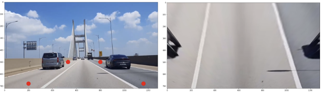
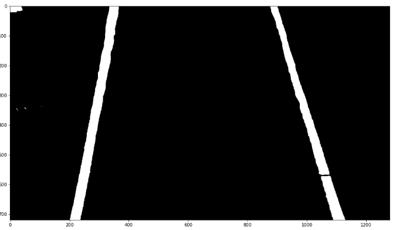
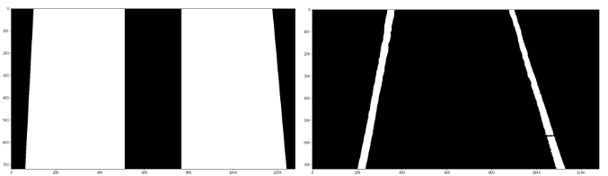
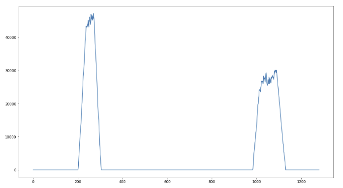
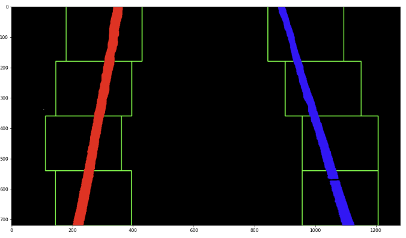
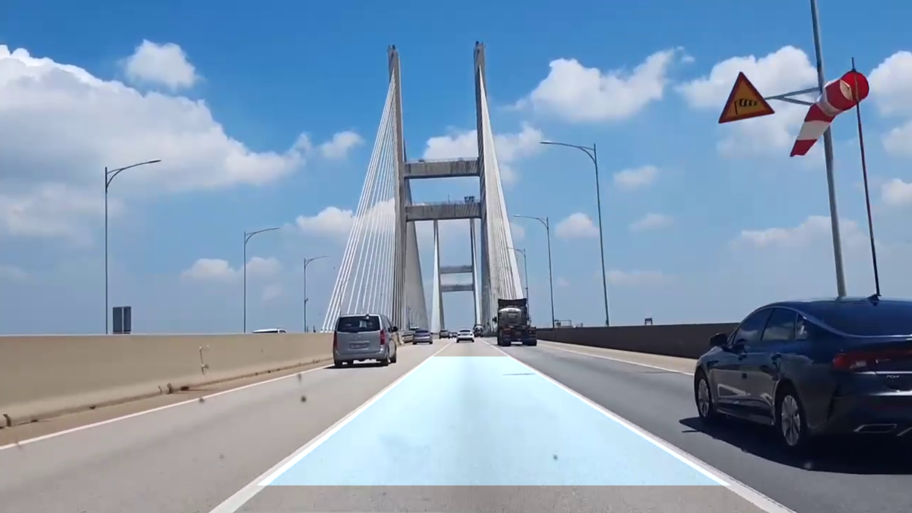

Traffic line detection using CV2
1.주제 선정
주제는 ’CV2 활용 차선 탐지’로 최근 자율주행 자동차의 눈이 되는 부분을 이미지분석 수업과정으로 배운 CV2를 활용해 구현할 수 있어 선정하였다.
2.이미지 로드 전처리
프로젝트에 사용한 이미지는 인천대교를 건너는 자동차의 블랙박스 영상이다.
2-1. 원근변환

적색 네 점을 위에서 본 시점으로 변환한다.
getPerspectiveTransform함수와, warpPerspective함수를 사용해 원근 변환된 이미지와, 다시 원상복귀시키기 위한 getPerspectiveTransform함수를 역으로 적용시킨 값을 출력한다.
2-2 색 범위 탐색

이미지에서 흰색 차선이 있는 곳을 찾기 위해 이미지를 HSV(색상,채도,명도) 형식으로 변환 후 흰색 구간에 부합하는 값을 출력한다.
2-3. 관심지역 설정

색 구간으로 흰색을 탐지한 결과 좌상단에 노이즈가 있는 것을 볼 수 있다. 노이즈를 없애기 위해 차선이 있는 구간을 관심지역으로 정해 관심지역 안에서만 탐지하게 한다.
원본 이미지와 해상도가 동일한 0으로 이루어진 1차원 이미지에 fillpoly함수를 사용하여 관심구간 좌표를 흰색으로 칠한다. 후에 bitwise_and 연산을 이용해 겹치는 구간만을 출력한다.
2-4. 흑백화, threshold 연산
185를 기준으로 threshold 연산을 한 이미지를 출력한다.
3.탐지구간 분할
3-1. 차선 히스토그램
전처리 된 1차원 이미지를 행 기준으로 더하여 출력된 리스트를 히스토그램으로 그린후, 히스토그램의 좌측과 우측에서의 최댓값을 가지는 점을 출력한다.

예시 사진에서는 (270,1082) 점에서 최댓값을 가졌다.
3-2. 구간 분할 및 탐색
각 차선을 n개의 구간으로 나누어 좌,우로 125의 마진을 갖는 상자를 그린다. 동영상의 각 프레임에서 상자안에 드는 차선들의 평균값을 리턴한다. 리턴된 값에 Polyfit연산을 사용해 차선의 예측선을 출력한다.

4. 결과 도출
차선의 예측선 사이를 fillpoly함수를 통해 칠한후, 2-1에서 출력한 원근변환을 이용해 원본 크기로 돌린다. 투명도를 위해 원본 동영상에 addWeighted 연산을 통해 결과 동영상을 출력한다.

5. 응용 방안
차선의 곡률, 이탈률을 계산하여 차선이탈 경고시스템에 적용 가능하다. 더 나아가 고속도로처럼 차선이 명확한 부분에서는 간단한 자율주행기능에도 적용할 수 있다.
유사한 방식으로 주차선을 탐지한다면 주차보조 시스템에적용할 수 있다.
6. 보완해야 할 점
커브길을 진입할 경우에 2-3에서 지정한 관심지역 밖으로 차선이 나가는 경우에는 탐지를 하지 못한다.
원근변환, 관심지역의 값을 변경해 보완해야 함
- 그림자가 있거나 갑자기 밝아지는 상황에서 탐지율이 떨어진다. 주변의 밝기를 기준으로 threshold연산을 유동적으로 하여 보완할 필요가 있다.
코드:
https://drive.google.com/drive/folders/1Jfc9HOaVIaTQ48MsyXwG79ePtQIfflnl?usp=sharing
소스 출처: https://github.com/sidroopdaska/SelfDrivingCar/tree/master/AdvancedLaneLinesDetection
영상 출처: